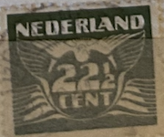
| SOURCE | TITLE| IMAGE MATCH | click to source page |
| allnumis.com | 22 1/2 Cent 1941 - Flying Dove, Numerals, Figures - Netherlands - Stamp - 9690 | 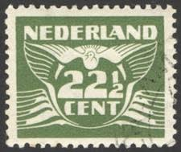 |
| pvoller.net | Netherlands Postal History 1941-1945 | 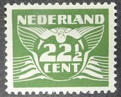 |
| Colnect | Stamp: Flying dove (Netherlands(Flying dove - 1941) Mi:NL 383,Sn:NL 243H,Yt:NL 373,Sg:NL 549,AFA:NL 384,NVP:NL 383,Un:NL 373 📮 |  |
| eBay | Nederland Postage ~ Daily 1½¢ Gray Stamp ~ Posted/Used ~ c.1925 ~ 03 | eBay | 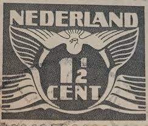 |
| Colnect | Netherlands : Stamps [Year: 1941] [1/4] : Colnect 📮 | 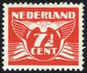 |
| mantgum.com | februari 2017 | 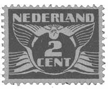 |
| Colnect | Stamp: Flying dove (Netherlands(Flying dove - 1941) NVP:NL 379a1 📮 |  |
| lastdodo.de | Kioske Firmenlochungen-Katalog - LastDodo | 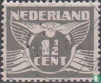 |
| Todocolección | sellos holanda, nederland, 10 cent, reina wilhe - Buy Antique stamps of Netherlands on todocoleccion | 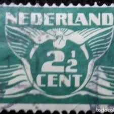 |
| MarktPlaza | Postzegels XL ! op MarktPlaza. Dagelijks uitbreidend aanbod in Postzegels, Mapjes, Boekjes, Eerstedag-enveloppen etc. etc. | 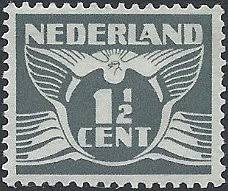 |
| lastdodo.com | Kiosks Perfin catalogue - LastDodo |  |
| Todocolección | sello holanda, nederland 5c rey guillermo iii, - Buy Antique stamps of Netherlands on todocoleccion |  |
| Aukro | Nizozemí 1941 Mi: NL 381 Série: Létající holubice - 1941 | Aukro | 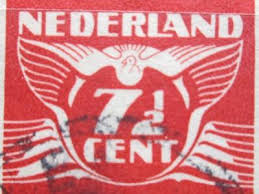 |
| HipStamp | Netherlands SC#144 2½c Flying Dove (1924) Used | Europe - Netherlands & Colonies, General Issue Stamp / HipStamp | 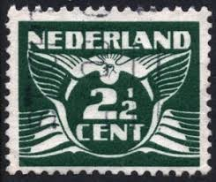 |
| eBay | Purple Dutch & Colonies Stamps for sale | eBay |  |
| DBNL | Drents museum te Assen De collectie van de 'Stichting Schone Kunsten rond 1900' door drs. J.J. Heij, Neerlandia. Jaargang 97 - DBNL |  |
| Stampedia | stampedia NETHERLANDS STAMP catalog | 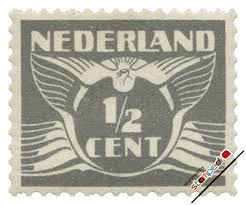 |
| lastdodo.com | Flying Dove (PM) 1½ (1928) - Netherlands - LastDodo |  |
| Todocolección | sello holanda, nederland, 25 cent, reina julian - Buy Antique stamps of Netherlands on todocoleccion | 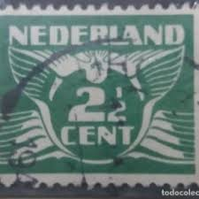 |
| enasim.ir | 2 تمبر بسیار باارزش قدیمی 1938 کلاسیک کمیاب اسپانیا . مناظر (94)2+ | اینسیم | 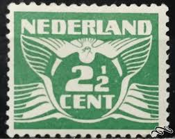 |
| Designspiration | Workwear Labels, Retro Style, and Labels image inspiration on Designspiration | 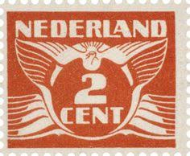 |
| carto.net | Libération de M.C. Escher (Bevrijding) (Escher in het Paleis - août 2010) | 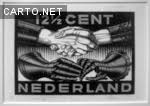 |
| Amazon.ca | Netherlands 174E unmounted Mint/Never hinged ** MNH 1934 Clear Brands (Stamps for Collectors) : Amazon.ca: Everything Else | 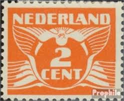 |
| LastDodo | Het beste uit Nederland Muziekland '92 CD 017830.61 (1992) - Diverse artiesten - LastDodo | 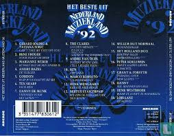 |
| eBay | Netherlands 1926-1927 Numerical Stamp 2c (HBX) | eBay |  |
| eBay | Purple Dutch Stamps for sale | eBay |  |
| Todocolección | sello holanda, nederland 4c +4, b.j. blommers, - Buy Antique stamps of Netherlands on todocoleccion | 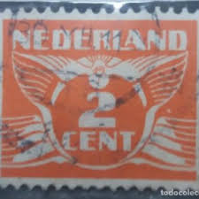 |
| Todocolección | sello holanda, nederland 10c rey guillermo iii, - Buy Antique stamps of Netherlands on todocoleccion |  |
| Todocolección | sellos holanda, nederland, 5 cent, reina wilhel - Buy Antique stamps of Netherlands on todocoleccion |  |
| Colnect | Netherlands : Stamps [Year: 1926] [1/5] : Colnect 📮 | 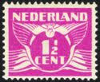 |
| Dreamstime.com | NETHERLANDS - CIRCA 1924: Postal Stamp Printed in the Netherlands (Holland), Shows Stylized Animal Bird Flying Dove Editorial Stock Image - Image of historic, bird: 301563189 |  |
| Todocolección | sellos holanda, nederland, 1 cent, años, 1876 - Buy Antique stamps of Netherlands on todocoleccion | 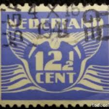 |
| Shutterstock | 1+ Hundred 1 2 Cent Stamp Royalty-Free Images, Stock Photos & Pictures | Shutterstock | 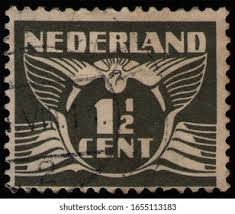 |
| eBay | Nederland Postage ~ Daily 1½¢ Gray Stamp ~ Posted/Used ~ c.1925 ~ 01 | eBay | 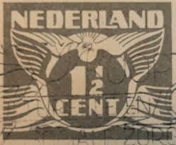 |
| Todocolección | sello holanda, nederland 7,1/2 cent, reina wilh - Buy Antique stamps of Netherlands on todocoleccion |  |
| Colnect | Stamp: Flying Dove - Coil 4 Corners (Netherlands(Flying Dove - 1930 - Coil 4 Corners) Mi:NL 172D,Sn:NL 165b,Yt:NL 166a,Sg:NL 305D,NVP:NL R58,Un:NL 166c 📮 |  |
| HipStamp | Netherlands #243Er 1941 used flying pigeon 7 1/2+ 2 1/2 c pair from coils | Europe - Netherlands & Colonies, General Issue Stamp / HipStamp |  |
| Colnect | Netherlands : Stamps [Year: 1925] [1/5] : Colnect 📮 | 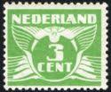 |
| HipStamp | Netherlands 1936, Flying Dove, 1.5c, sc#167, used | Europe - Netherlands & Colonies, General Issue Stamp / HipStamp |  |
| LOT-ART | Netherlands 1935 - Flying Dove "Spy Stamp" - NVPH 172s in Netherlands | 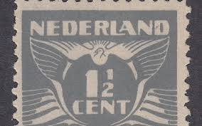 |
| norphil.co.uk | Norvic Philatelics Blog: On The Collector's Bookshelf: beyond the basic catalogues | 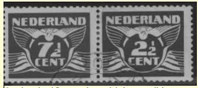 |
| Flickr | Netherlands 71/2 cent Stamp | stompstompstamps | Flickr | 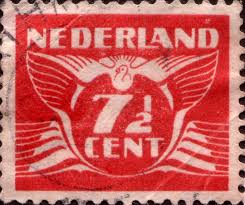 |
| stamps-plus.com | Stamps Plus | Netherlands | 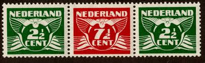 |
| eBay | Netherlands 1924, Vliegende Duif, Flying Dove, 2 1/2 cent used, No Watermark, VF | eBay | 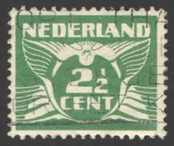 |
| Alamy | NETHERLANDS - CIRCA 1941: A 2 1 2 cent stamp printed in the Netherlands, circa 1941 Stock Photo - Alamy | 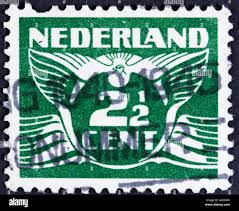 |
| PicClick | NETHERLANDS 5 CENT Postage Due Te Betalen Port 1870s Used Cat$393cad Numerical $95.14 - PicClick | 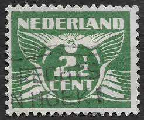 |
| Mercari | 1928 Netherlands (No.210) Semi Post | Mercari | 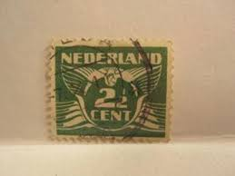 |
| Shutterstock | Netherlands Circa 1929 Stamp Printed Netherlands Stock Photo 480033559 | Shutterstock |  |
| Todocolección | 1954 - holanda - reina juliana - yvert 632 - Buy Antique stamps of Netherlands on todocoleccion | 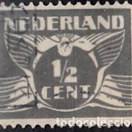 |
| Colnect | Stamp: Flying Dove - 1926-1935 - A Series (Netherlands(Flying dove - 1926-1935 - A) Mi:NL 174A,Sn:NL 168,Yt:NL 168,Sg:NL 307A,AFA:NL 174,NVP:NL 173A,Un:NL 168 📮 | 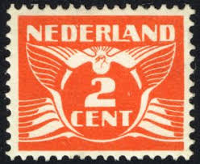 |
| ProBoards | Postmark Calendar | The Stamp Forum (TSF) |  |
| Osta | Hollandi 1935 (Mi-281) MNH (247705832) - Osta.ee | 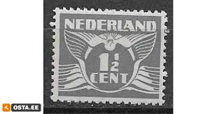 |
| eBay | Las mejores ofertas en Estampillas de holandés púrpura | eBay | 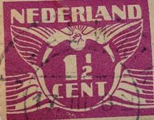 |
| Netherlands + Philately | Political propaganda in the Netherlands on Dutch stamps and postal history – Netherlands + Philately |  |
| eBay | WURTTEMBERG O152 - Numeral of Value "1919 Official Postage" (pc12817) | eBay |  |
| eBay | Netherlands 1926-1927 Numerical Stamp 1c (HBX) | eBay | 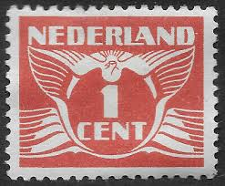 |
| Wikimedia.org | File:PWE Seagull forgery NL.jpg - Wikimedia Commons | 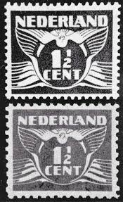 |
| Colnect | Stamp: Flying dove (Netherlands(Flying dove - 1941) Mi:NL 380,Sn:NL 243C,Yt:NL 370,Sg:NL 546,AFA:NL 381,NVP:NL 380,Un:NL 370 📮 |  |
| Shutterstock | 6+ Hundred 2 Cents Stamp Royalty-Free Images, Stock Photos & Pictures | Shutterstock | 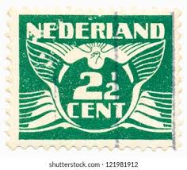 |
| eBay | NETHERLANDS , 1924/26 , GULL , 21/2c STAMP , PERF 121/2 , MNH , CV$6 | eBay | 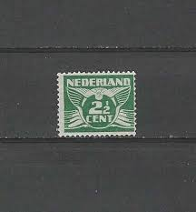 |
{kind=link}